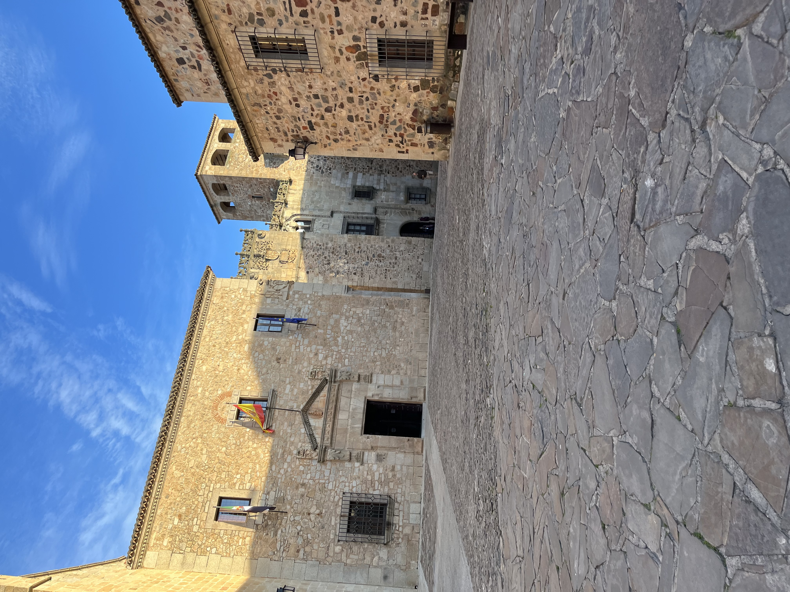

Madrid
The city in which my "homebase" for the semester is!
My apartment is in the neighborhood called Lavapiés which is just South of the famous Puerta del Sol area. I have 7 roommates, 6 of which are
from different countries in the EU. I attend classes a 10 minute walk from where I live, however the public transportation system is amazing.
The classes I am currently taking are Spanish
Civilization; Spanish Conversation; World Relgions; and Culture, Globalization, and the Media, since it is my last semester of undergrad my
course load is light and a lot different than the computer science classes I had been taking, a refreshing and thought-provoking change in pace.
A typical week of my study abroad experience includes going to class each day and grabbing a café con leche in between class or after, or getting
a glass of tinto de verano with salty tapas and talk. I then go home and grab dinner at the grocery store, Carrefour, across the street, and do
homework or watch a movie with friends to round out the night. Once a week I attend an incredible Flamenco class. On the weekends I usually eat
out or get coffee with friends and then spend the night at a club or bar, if I am not on a weekend trip.
The list of highlights continues to grow each day as I try new cafés, bars, shops, and parks, but some of my favorites so far:
Getting coffee at Azura bar, shopping near Puerta del Sol, sitting on rooftops on Gran Vía, seeing live shows, walking around Plaza de España and watching the
sunset near Templo de Debod, getting drinks in the Moncloa area, and trying out new restaurants around the city.
Salamanca
Spent a weekend here and stayed at an VRBO right next to the Plaza Mayor, a central spot in the city.
Highlights included: Daniel's
Chupiteria, the Roman Bridge, and the small town feeling of the beautiful town.
Segovia
Spent a free Friday with about 13 other students from the program in Segovia! I mere 1 hour bus ride away passing through the breathtaking
mountains that separate Madrid from Segovia, the city proved to be a glorious medieval snapshot. While updated to the times, historical
artifacts like the Aqueducts and the Alcázar de Segovia were absolutely incredible. It was amazing to see things that I had only read about in
books or seen pictures of in real life.
Toledo
The first class trip for our program was a day trip to stunning Toledo. Known as the city of three religions, our program teachers gave
us a tour of various sites around the city including Mosques, Synagogues, and Churches, some of which had been repurposed as different religions
ruled the city. Since the city is a located in a hilly area, the views looking towards the city and from the city beyond where spectacular. I
could spend an entire day admiring the views. I hope to return to Toledo later in the semester.
Tenerife
A stunning island off the coast of Morocco and Western Sahara. My best friend from the US and I spent the long weekend there
sitting by the pool, walking along the coast of stunning Puerto de la Cruz and its black rocky beaches and crashing waves. The
island is the result of the volcano that stands in the middle of Tenerife, which one can see at many points. The ability to see
the volcano and then turn my head the other way to look at the ocean, was such a unique experience that I could not get over.
The weather started beautifully warm and got colder as the weekend went on, but the rain allowed for us to catch a Tottenham
football game at a British bar and obtained some delicious pizza. Cayla raved about the plantains and we saw a few plantations
in the area. We also visited the most beautiful tropical botanical garden with the greatest variety of palms that I have ever
seen. I would highly recommend that people traveling to Spain or Europe make the trip.
Extremadura
Took our overnight school trip to the autonomous community of Extremadura which is a western region touching Portugal. The
region is famous for long preserved Roman cities, sites, wine, and jámon iberico. We started in Trujillo, a small city with
a large castle that was the inspiration for Casterly Rock in Game of Thrones season 7. The city was the birthplace of Pizarro,
the conquistador of Peru, not the best thing to be famous for. Next we spent the rest of the day in Cáceres home to another
scene from Game of Thrones season 7, golden buildings and palaces, and where we spent a night in the Plaza Mayor celebrating
Carnaval (sort of like Fat Tuesday in the US as a celebration before lent). The next day we traveled to Mérida and saw reminents
of a Roman ampitheater, in which me and a few friends sang "The Lion Sleeps Tonight", a Roman bridge, and the Temple of Diana.
It was a wonderful experience in a lesser known area that allowed me to get to know people in my program better and visit an
area that I never would have otherwise.



Spring Break
Spending Spain's Holy Week starting in Mallorca, then to Sevilla, and lastly Málaga.
Valencia
Spent the weekend with some of my best friends from my study abroad program in Valencía for Las Fallas festival. We arrived
Thursday night and spent the night walking along the beach touching the Mediterranean Sea. The rest of the weekend was spent
exploring the beauty and festivities of Las Fallas. The festival is an old pagan celebration where Valencian families create
huge paper mache statues that on are burned on Saturday along with huge firework displays everywhere. There were about 200
fallas throughout the city ranging in size and theme, mostly relating to a political statement, some were obscure and others
very obvious. We were also able to walk around the touristy areas of the stunning city. A few highlights include trying agua de
Valencia, a cocktail containing various types of alcohol and orange juice to make a drink as easy to drink as water. We also
witnessed the burning of two fallas, an interesting sight to behold. The journey home did not go as planned. Spanish culture
is very lax and not typically time efficient, however we were one minute late to catch our bus due to issues finding a taxi to
get there, and the bus had left once we arrived. Luckily we all sat down and problem solved a way home since all the buses back
to Madrid were booked. We ended up getting a BlaBlahCar (like far distance Uber) to Cuenca, a small industrial city between
Valencía and Madrid, and took a bus from there. Although it was a long tough day, I think that we will treasure and laugh at the
happenings now that it is over. I would highly recommend visiting the city, at any time of the year.


Barcelona
Spending a long weekend here hoping to have my Cheetah Girls 2 moment.